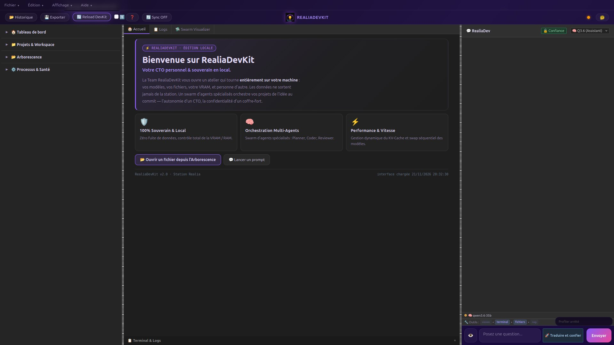

RealiaDevKit — le premier agent
Le premier agent que l'Architecte a écrit, seul, pendant son apprentissage autodidacte. Il tourne sur sa propre machine, sans cloud, et c'est avec lui qu'est écrite RealiaStation. Gratuit, open source, disponible sur GitHub en version bêta.

Pourquoi il existe
Dépendre d'un service extérieur, c'est louer son propre cerveau. Un agent qui tourne chez soi ne facture pas à la requête, ne s'arrête pas quand un fournisseur s'arrête, et ne lit pas vos fichiers pour les revendre. La souveraineté n'est pas un slogan : c'est un branchement.
Comment il travaille, sans jargon
Vous décrivez le résultat voulu. Un premier agent découpe la demande en petites tâches ; un second écrit le code de chaque tâche, le teste et corrige. Si quelque chose casse, l'erreur revient au début de la chaîne — pas à vous. Tout tient sur une seule carte graphique de 16 Go, celle qui est déjà dans la machine.

Où il en est aujourd'hui
Version bêta, publiée gratuitement sur GitHub. Il travaille tous les jours : c'est lui qui écrit RealiaStation, donc ce site. Soixante-six outils, seize fiches de rôle, deux modèles qui se relaient, et des garde-fous qui empêchent un agent de sortir de son rôle. Ce qui reste à faire est écrit noir sur blanc, pas caché.
Repères

Ce que ça change, concrètement
Un projet de trois semaines se mène sans qu'un seul fichier quitte le disque : le brief, les modèles et les résultats restent sur la machine. Le jour où elle s'éteint, il n'y a rien à révoquer chez un prestataire.
Et comme chaque étape laisse une trace — un test, une mesure, un journal —, on peut relire six mois plus tard pourquoi une décision a été prise, pas seulement laquelle. Un agent qui ne prouve rien n'est pas un agent : c'est une opinion.